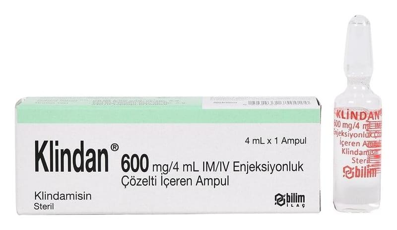

Klindan 600 mg/4 ml IM/IV Enjeksiyonluk Çözelti İçeren Ampul, 1 Ampul

Ne için kullanılır
KT · Bölüm 1• KLİNDAN, kas veya damar içine uygulanan renksiz veya hafif sarımtırak partikül içermeyen berrak çözeltidir. • KLİNDAN, ciddi bakteriyel enfeksiyonların tedavisinde kullanılan bir antibiyotik olan klindamisin (klindamisin fosfat şeklinde) içerir. Karton kutu içerisinde 4 mL’lik 1 adet Tip I cam şeklinde bulunur.